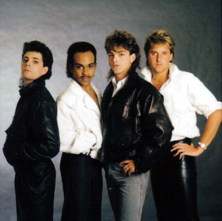

Miscellanea
Bryant Simpson - My Time in the Band Called “ZOT”
by Bryant Simpson

from left to right: Patrick Knowles, Bryant Simpson, Randy Wayne, Chris Stewart
It was fall of 1982 when I responded to an ad in a local paper for a band seeking a bass player. “Zot” was a trio based in Huntington Beach, about 20 minutes from my home in Anaheim. They had a small but loyal following, playing mostly high school dances and backyard parties. Their sound was very techno pop, with Randy’s lead vocals reminding me of David Bowie on helium! My background was in R&B, funk and jazz-fusion, but somehow when we put everything together that day, it felt…great! They were excited and so was I. We immediately started rehearsing for some live shows with hopes of making a demo with Zot’s “new sound”. Randy Wayne’s songwriting was strong and while he was not the most musically talented in the band (I always thought Patrick Knowles was), he had lots of charisma. Chris Stewart’s drumming was solid as well and we really locked. We rehearsed almost daily and as the music got tighter, so did our friendship. We worked hard and played hard.
Our first demo caught the ears of a lot of people. I must admit that there was nothing out there that you could accurately compare it to. With several record labels showing interest, we looked for a manager with strong connections. We finally chose a person who I will refer to as BKP, who at the time was managing Rod Stewart. In my opinion, signing him as manager was both a blessing and a curse for Zot. Although we may not have enjoyed some of our success had it not been for BKP, he was instrumental in changing the focus of the band from making good music to making the “big time” while at the same time planting “you are the star” seeds in Randy’s head. By the time we signed with Elektra/Asylum, the tree was already growing. There was a clause in the contract that stated the band would be dropped if Randy left the group. But we were so close of friends that we were sure that would never happen.
We searched for a producer and went through many candidates. We finally settled on Pat Moran who had just finished Robert Plant’s “The Big Log”. We recorded at the Record Plant in L.A. but Randy and Pat (Moran) the mix-down was in Wales were Moran lived. Naturally, the project went over budget but we were happy with the finished results. They next few months were like a whirlwind with T.V. appearances, live shows and of course, parties and more parties. Then the bottom fell out. Shortly after the release of the album, our A&R guy who signed us (he had also signed Motley Crue and Dokken) had a big falling out with Elektra’s CEO and left us at the label without representation. He went over to Geffen Records and we were dropped. At this time, the pillow talk between Randy and BKP came into fruition. In the fall of 1985 we went on tour with Latin singer/actress Maria Conchita Alonso. When we returned in 1986, the band disbanded. Randy and BKP continued their dubious relationship for several years after but he was never able to make Randy into that “big star”. Patrick and Chris joined different bands in the Orange County. I began doing a lot of session work and moved to North Hollywood. I kept in touch with the guys for a few years but gradually lost contact by the early 90’s.
The times I had with Zot were priceless; I wouldn’t trade them for the world. Patrick, Chris and Randy will always have a special place in my heart. But after that experience, I knew that I never wanted to be in another band situation were the goal was to get signed, sell a million records and become stars. To me, the music was, is and always will be most important. Everything else is just icing on the cake.
Posted by Bill at March 26, 2005
old All Music Guide Zot bio
The Ultimate 80's Retro Music Page has a large collection of band bios from the 80's, including one for Zot. This was taken from the All Music Guide listing for Zot which doesn't seem to be complete anymore. I remember this from their old database. Fortunately the people at the Ultimate 80's Retro Music Page archived this blurb:
Veteran producer Pat Moran, who worked with Edie Brickell, Jon Butcher Axis, and so many others, engineers and produces this highly listenable and entertaining album by the band Zot. It's the songs and vocals of keyboard player Randy Wayne who would go on to work with one of the big acts at the Stiefel Company which represented Zot, that act being Rod Stewart. There's appropriate alien cover art and a vocal from Wayne which is borderline Nick Gilder veering off into David Bowie territory. Randy Wayne would have been the perfect addition to the Spiders From Mars when Bowie's rhythm section tried to launch a career of their own. This is the stuff fans of Ziggy Stardust could truly have appreciated. Though there are no sparks of brilliance à la Roxy Music or other adventurous experimental bands, Zot works because the music is simple, ethereal, and quite pleasing.
The undercurrents could be stronger, there is no push and pull, and while songs like "I Believe in Miracles" have their moments, they just don't have enough to get them all the way over the bar that was commercial FM radio. Ultravox would at least throw you a "Wide Boys," and something like that would've been a plus here. It's all original compositions by Randy Wayne, and had he covered a Ric Ocasek tune from the Cars' Panorama album or even Sweeny Todd's "Roxy Roller," or Ultravox, the album would have that diversion it seems to be crying out for. But the bright side is that the LP is very good and is a fun listen: something to pull out and play when the mood strikes. A surprisingly pleasant disc despite its lack of dynamics. ~ Joe Viglione, All Music Guide
Posted by Bill at February 5, 2005
Zot reunion in the works?
Well folks I've heard from two different sources that a few of the original Zot members just might be thinking about a reunion. It sounds like Chris Stewart has been in contact with Patrick Knowles, Bryant Simpson and Randy Wayne and that there has been some talk about them writing some new material.
I for one am a very happy camper to be hearing this. I figured that after 20 years there wasn't much hope of Zot recording or releasing any new material, so hearing about them even considering this is great news.
Before I jump to any unfounded conclusions about this news I'll try to get some more confirmation. Of course I'll post anything I learn here...since this is the only Zot website on the net you won't have to go looking anywhere else for a scoop!
Posted by Bill at October 25, 2004
New Zot website now online
Well it's certainly taken me quite a while, but I finally have a working system up for the Zot site. Where before we only had a single Zot page, I have put together an entire website for our favorite band.
The site is now powered by a great piece of blogging software, MovableType. It uses databases to keep all the information in line and has a number of features that help me keep up with the posting of the information. One feature I'm pretty excited about is the commenting function. This way maybe we can get some fresher information...without having to wait for me to actually post it. ;)
I've been getting quite a bit of new information about the band recently with promises from some of the members for even more. The old format had outlived the amount of information I could put into it. Back when I made the first Zot page I never dreamed I'd get the response I have. I hope we can make this into a more comprehensive site with the help of some of the band members and of course the fans.
Posted by Bill at September 11, 2004